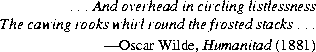

java.util.StackStack extends Vector with five operations that allow a vector to be
treated as a stack. The usual push and pop operations are provided, as well as a
method to peek at the top item on the stack, a method to test for whether the stack
is empty, and a method to search the stack for an item and discover how far it is
from the top.
public classWhen a stack is first created, it contains no items.Stackextends Vector { public Objectpush(Object item); public Objectpop() throws EmptyStackException; public Objectpeek() throws EmptyStackException; public booleanempty(); public intsearch(Object o); }
21.12.1 public Object
push(Object item)
The item is pushed onto the top of this stack. This has exactly the same effect as:
addElement(item)See method
addElement of Vector (§21.11.13).21.12.2 public Object
pop() throws EmptyStackException
If the stack is empty, an EmptyStackException is thrown. Otherwise, the topmost
item (last item of the Vector) is removed and returned.
21.12.3 public Object
peek() throws EmptyStackException
If the stack is empty, an EmptyStackException is thrown. Otherwise, the topmost
item (last item of the Vector) is returned but not removed.
21.12.4 public boolean
empty()
The result is true if and only if the stack contains no items.
21.12.5 public int
search(Object o)
If the object o occurs as an item in this Stack, this method returns the distance
from the top of the stack of the occurrence nearest the top of the stack; the topmost
item on the stack is considered to be at distance 1. The equals method
(§20.1.3) is used to compare o to the items in this Stack.
Contents | Prev | Next | Index
Java Language Specification (HTML generated by Suzette Pelouch on February 24, 1998)
Copyright © 1996 Sun Microsystems, Inc.
All rights reserved
Please send any comments or corrections to doug.kramer@sun.com